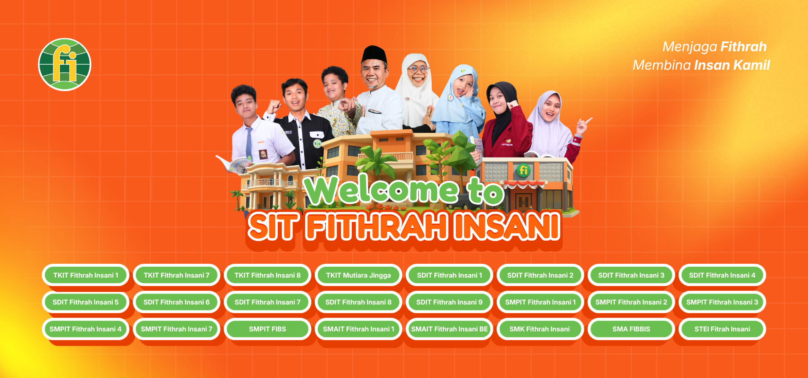
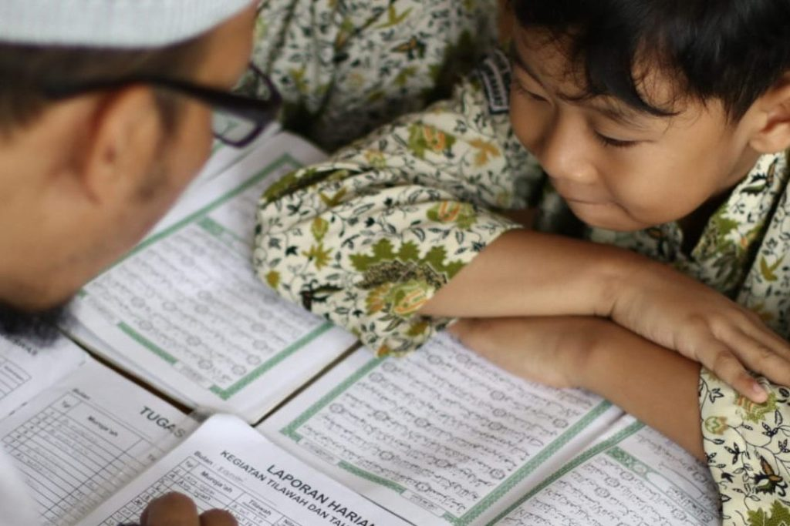
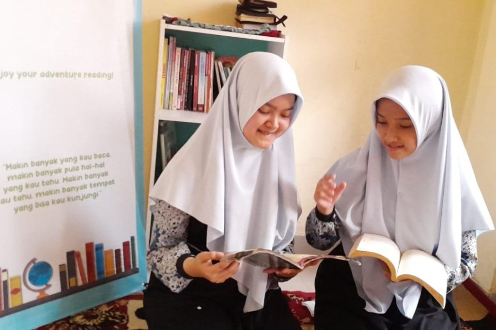
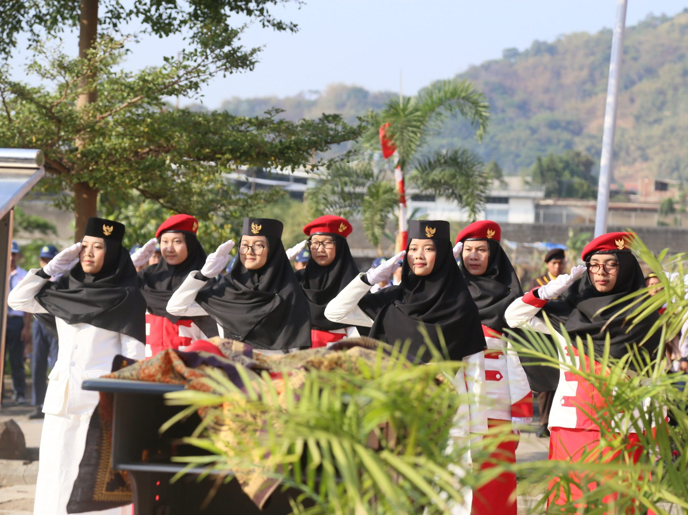
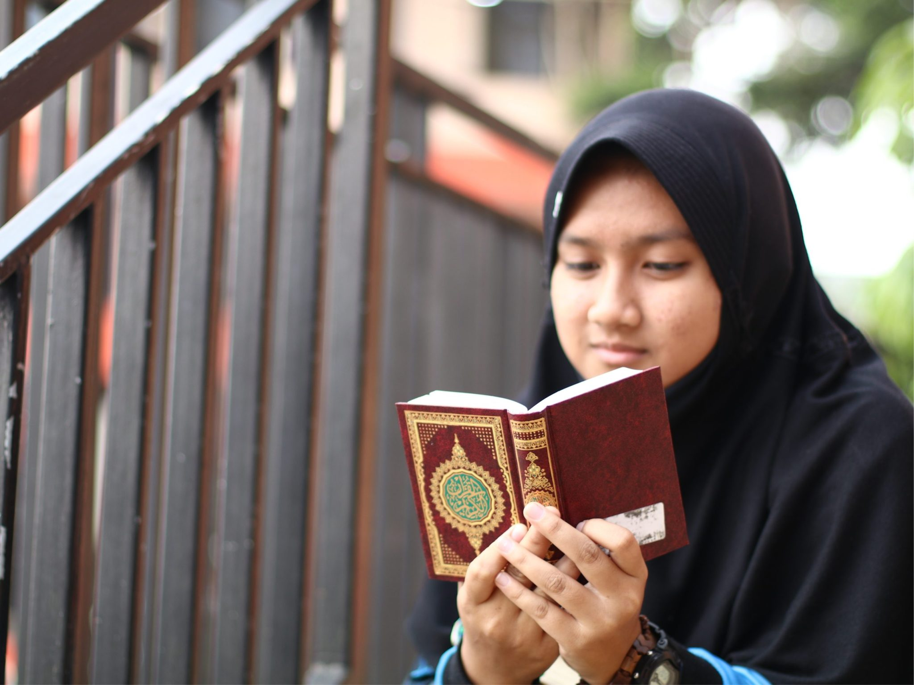
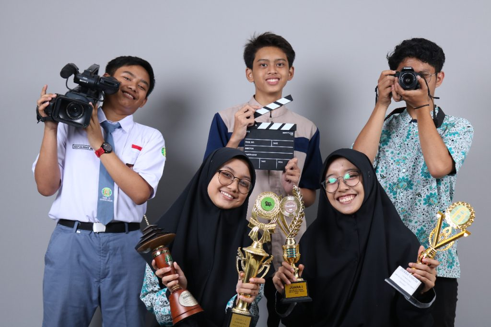

“Menjaga Fithrah
Membina Insan Kamil”

Menjadi Sekolah yang mendidik siswa agar memiliki dasar aqidah yang benar, berakhlak Islami, berilmu, dan mandiri

Fithrah Insani memiliki core value yang bertajuk READY yang mengandung makna sebagai berikut.
Siswa-siswi dan lulusan SIT Fithrah Insani diharapkan memiliki jiwa religius yang berlandaskan nilai-nilai Islam yang universal. Religiusitas bukan sekadar ritual, melainkan menjadi nafas dalam setiap aspek kehidupan.
Siswa-siswi dan lulusan SIT Fithrah Insani memiliki keunggulan dalam keilmuan sesuai dengan tuntutan zaman di level pendidikannya. Keunggulan akademik dan non-akademik menjadi standar yang harus dicapai.
Siswa-siswi dan lulusan SIT Fithrah Insani memiliki kepedulian kepada pihak lain yang ditunjukkan dengan akhlak mulia dan adab Islami. Kesadaran sosial dan lingkungan merupakan cerminan iman yang sempurna.
Siswa-siswi dan lulusan SIT Fithrah Insani memiliki jiwa dinamis yang mampu beradaptasi dengan perubahan zaman tanpa meninggalkan nilai-nilai Islam yang menjadi pegangan.
Siswa-siswi dan lulusan SIT Fithrah Insani memiliki jiwa muda yang energik, kreatif, dan inovatif dalam menghadapi tantangan masa depan.
SIT Fithrah Insani berkomitmen untuk memberikan pendidikan terbaik bagi siswa-siswinya agar bisa memiliki dasar aqidah yang benar, berakhlak Islami, berilmu, dan mandiri. Berikut beberapa program unggulan yang dimiliki SIT Fithrah Insani untuk mencapai cita-cita tersebut.





“Menjaga Fithrah
Membina Insan Kamil”